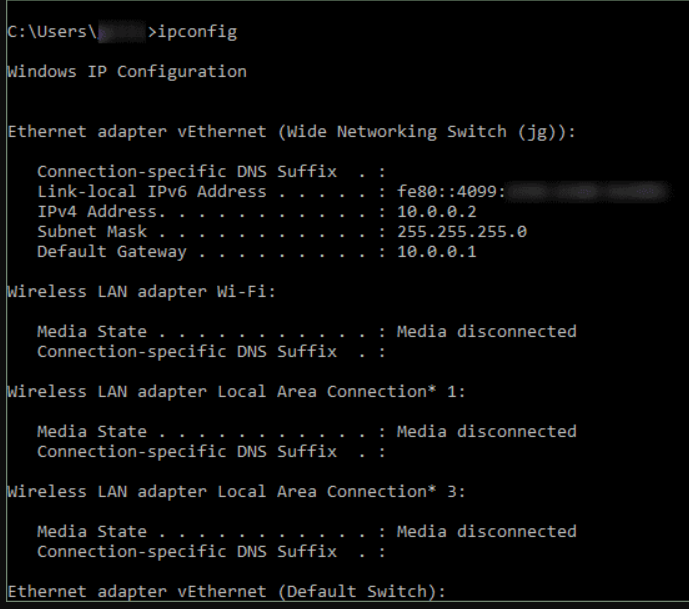

Basic Network Scans
|
ipconfigDisplays all current TCP/IP network configuration values and refreshes Dynamic Host Configuration Protocol (DHCP) and Domain Name System (DNS) settings. Used without parameters, ipconfig displays Internet Protocol version 4 (IPv4) and IPv6 addresses, subnet mask, and default gateway for all adapters.
Syntax: |
| Parameters | Parameter Description |
| /all |
Displays the full TCP/IP configuration for all adapters. Adapters can represent physical interfaces, such as installed network adapters, or logical interfaces, such as dial-up connections. |
| /displaydns |
Displays the contents of the DNS client resolver cache, which includes both entries preloaded from the local Hosts file and any recently obtained resource records for name queries resolved by the computer. The DNS Client service uses this information to resolve frequently queried names quickly, before querying its configured DNS servers. |
| /flushdns |
Flushes and resets the contents of the DNS client resolver cache. During DNS troubleshooting, you can use this procedure to discard negative cache entries from the cache, as well as any other entries that have been added dynamically. |
| /registerdns |
Initiates manual dynamic registration for the DNS names and IP addresses that are configured at a computer. You can use this parameter to troubleshoot a failed DNS name registration or resolve a dynamic update problem between a client and the DNS server without rebooting the client computer. The DNS settings in the advanced properties of the TCP/IP protocol determine which names are registered in DNS. |
|
/release [ |
Sends a DHCPRELEASE message to the DHCP server to release the current DHCP configuration and discard the IP address configuration for either all adapters (if an adapter is not specified) or for a specific adapter if the adapter parameter is included. This parameter disables TCP/IP for adapters configured to obtain an IP address automatically. To specify an adapter name, type the adapter name that appears when you use ipconfig without parameters. |
|
/release6[ |
Sends a DHCPRELEASE message to the DHCPv6 server to release the current DHCP configuration and discard the IPv6 address configuration for either all adapters (if an adapter is not specified) or for a specific adapter if the adapter parameter is included. This parameter disables TCP/IP for adapters configured to obtain an IP address automatically. To specify an adapter name, type the adapter name that appears when you use ipconfig without parameters. |
|
/renew [ |
Renews DHCP configuration for all adapters (if an adapter is not specified) or for a specific adapter if the adapter parameter is included. This parameter is available only on computers with adapters that are configured to obtain an IP address automatically. To specify an adapter name, type the adapter name that appears when you use ipconfig without parameters. |
|
/renew6 [ |
Renews DHCPv6 configuration for all adapters (if an adapter is not specified) or for a specific adapter if the adapter parameter is included. This parameter is available only on computers with adapters that are configured to obtain an IPv6 address automatically. To specify an adapter name, type the adapter name that appears when you use ipconfig without parameters. |
|
/setclassid |
Configures the DHCP class ID for a specified adapter. To set the DHCP class ID for all adapters, use the asterisk (*) wildcard character in place of adapter. This parameter is available only on computers with adapters that are configured to obtain an IP address automatically. If a DHCP class ID is not specified, the current class ID is removed. |
|
/showclassid |
Displays the DHCP class ID for a specified adapter. To see the DHCP class ID for all adapters, use the asterisk (*) wildcard character in place of adapter. This parameter is available only on computers with adapters that are configured to obtain an IP address automatically. |
| /? |
Displays Help at the command prompt |
| Examples: | |
|
To display the basic TCP/IP configuration for all adapters, type: |
ipconfig |
|
To display the full TCP/IP configuration for all adapters, type: |
ipconfig /all |
|
To renew a DHCP-assigned IP address configuration for only the Local Area Connection adapter, type: |
ipconfig /renew Local Area Connection |
|
To flush the DNS resolver cache when troubleshooting DNS name resolution problems, type: |
ipconfig /flushdns |
|
To flush the DNS resolver cache when troubleshooting DNS name resolution problems, type: |
ipconfig /flushdns |
|
To display the DHCP class ID for all adapters with names that start with Local, type: |
ipconfig /showclassid Local* |
|
To set the DHCP class ID for the Local Area Connection adapter to TEST, type: |
ipconfig /setclassid Local Area Connection TEST |

|
pingVerifies IP-level connectivity to another TCP/IP computer by sending Internet Control Message Protocol (ICMP) echo Request messages. The receipt of corresponding echo Reply messages are displayed, along with round-trip times. ping is the primary TCP/IP command used to troubleshoot connectivity, reachability, and name resolution. Used without parameters, this command displays Help content. You can also use this command to test both the computer name and the IP address of the computer. If pinging the IP address is successful, but pinging the computer name isn't, you might have a name resolution problem. In this case, make sure the computer name you are specifying can be resolved through the local Hosts file, by using Domain Name System (DNS) queries, or through NetBIOS name resolution techniques. This command is available only if the Internet Protocol (TCP/IP) is installed as a component in the properties of a network adapter in Network Connections. |
| Parameters | Parameter Description |
| /t |
Specifies ping continue sending echo Request messages to the destination until interrupted. To interrupt and display statistics, press CTRL+ENTER. To interrupt and quit this command, press CTRL+C. |
| /a |
Specifies reverse name resolution be performed on the destination IP address. If this is successful, ping displays the corresponding host name. |
| /l -size- |
Specifies the length, in bytes, of the Data field in the echo Request messages. The default is 32. The maximum size is 65,527. |
| /f |
Specifies that echo Request messages are sent with the Do not Fragment flag in the IP header set to 1 (available on IPv4 only). The echo Request message can't be fragmented by routers in the path to the destination. This parameter is useful for troubleshooting path Maximum Transmission Unit (PMTU) problems. |
| /l -TTL- |
Specifies the value of the Time To Live (TTL) field in the IP header for echo Request messages sent. The default is the default TTL value for the host. The maximum TTL is 255. |
| /v -TOS- |
Specifies the value of the Type Of Service (TOS) field in the IP header for echo Request messages sent (available on IPv4 only). The default is 0. TOS is specified as a decimal value from 0 through 255. |
| /r -count- |
Specifies the Record Route option in the IP header is used to record the path taken by the echo Request message and corresponding echo Reply message (available on IPv4 only). Each hop in the path uses an entry in the Record Route option. If possible, specify a count equal to or greater than the number of hops between the source and destination. The count must be a minimum of 1 and a maximum of 9. |
| /s -count- |
Specifies that the Internet timestamp option in the IP header is used to record the time of arrival for the echo Request message and corresponding echo Reply message for each hop. The count must be a minimum of 1 and a maximum of 4. This is required for link-local destination addresses. |
| /? |
Displays Help at the command prompt |
|
tracert This diagnostic tool determines the path taken to a destination by sending Internet
Control Message Protocol (ICMP) echo Request or ICMPv6 messages to the destination with
incrementally increasing time to live (TTL) field values. Each router along the path is
required to decrement the TTL in an IP packet by at least 1 before forwarding it.
Effectively, the TTL is a maximum link counter. When the TTL on a packet reaches 0, the
router is expected to return an ICMP time Exceeded message to the source computer. |
| Parameters | Parameter Description |
| /d |
Stops attempts to resolve the IP addresses of intermediate routers to their names. This can speed up the return of results. |
| /h -maximumhops- |
Specifies the maximum number of hops in the path to search for the target (destination). The default is 30 hops. |
| /j -hostlist- |
Specifies that echo Request messages use the Loose Source Route option in the IP
header with the set of intermediate destinations specified in |
| /f |
Specifies that echo Request messages are sent with the Do not Fragment flag in the IP header set to 1 (available on IPv4 only). The echo Request message can't be fragmented by routers in the path to the destination. This parameter is useful for troubleshooting path Maximum Transmission Unit (PMTU) problems. |
| /w -timeout- |
Specifies the amount of time in milliseconds to wait for the ICMP time Exceeded or echo Reply message corresponding to a given echo Request message to be received. If not received within the time-out, an asterisk (*) is displayed. The default time-out is 4000 (4 seconds). |
| /v -TOS- |
Specifies the value of the Type Of Service (TOS) field in the IP header for echo Request messages sent (available on IPv4 only). The default is 0. TOS is specified as a decimal value from 0 through 255. |
| /R |
Specifies that the IPv6 Routing extension header be used to send an echo Request message to the local host, using the destination as an intermediate destination and testing the reverse route. |
| /S -srcaddr- |
Specifies the source address to use in the echo Request messages. Use this parameter only when tracing IPv6 addresses. |
| /4 |
Specifies that tracert.exe can use only IPv4 for this trace. |
| /6 |
Specifies that tracert.exe can use only IPv6 for this trace. |
| -targetname- |
Specifies the destination, identified either by IP address or host name.. |
| /? |
Displays Help at the command prompt |
|
The effects of the ping value are not only visible in online games. Watching
movies and videos, making a video call, or visiting a website are also linked to
ping.
|